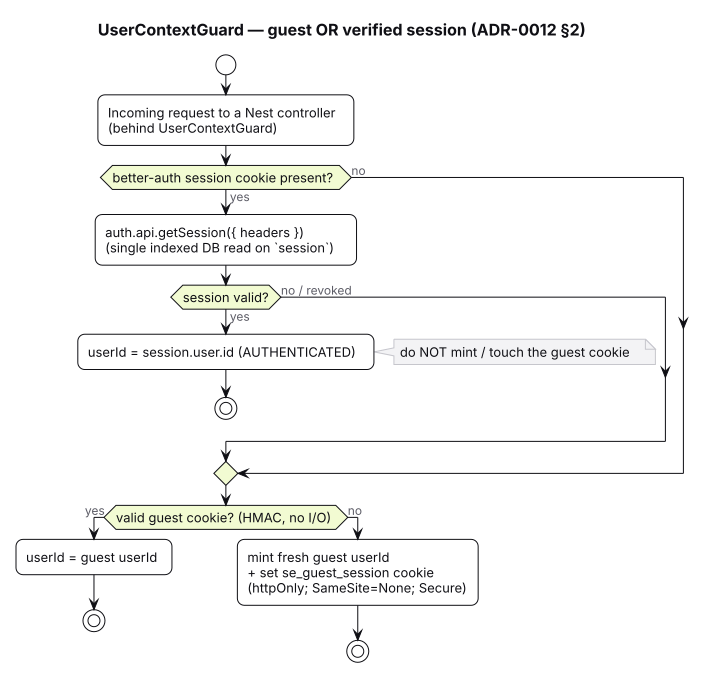
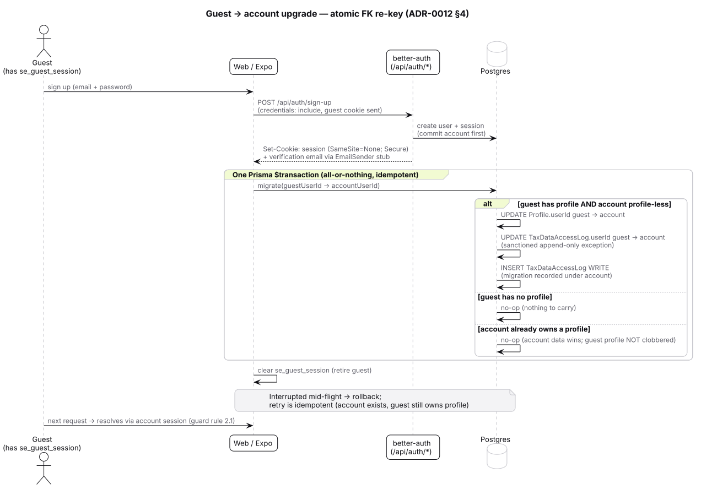

Status: Accepted · 2026-07-23 · realises Slice 2 (#41 REQ-005, #46 REQ-009, #47 REQ-010, #42
REQ-006) · extends ADR-0009 (better-auth as auth server) · honours the UserContextGuard seam
(ADR-0007 phase 1, REQ-002) · reconciles the session cookie with ADR-0011 (credentialed
cross-origin) · builds on ADR-0008 (field-encrypted profile) and ADR-0010 (Postgres + boot-smoke in CI).
Context
ADR-0009 chose better-auth as the auth server, mounted on the NestJS+Fastify API behind the
UserContextGuard seam, and named the phased scope (guest → email/password + upgrade → social + 2FA).
It settled the what. This ADR settles the how for the four Slice-2 tickets, i.e. the decisions the
grill surfaced that ADR-0009 deliberately left open:
- how better-auth actually mounts on Nest + Fastify, and how its handler surface coexists with
Nest's global
ValidationPipe,@fastify/cookie, and Fastify's body parser; - how the guard derives
userIdfrom either a valid guest token or a verified better-auth session — without touching any controller or service (the whole point of the seam); - the session cookie attributes, reconciled with the cross-site reality ADR-0011 already forced on
the guest cookie (
SameSite=None; Secure) — ADR-0009 and REQ-009 still saySameSite=strict, which is wrong for the deployed demo and must be superseded here; - the guest→account upgrade mechanism (#42): atomic re-key of the guest's encrypted
Profile(+ itsTaxDataAccessLog) onto the new accountuserId, its edge cases, and its idempotency; - hardening (#47): rate-limit storage at scale, origin-based CSRF, the breached-password check, security headers — and email delivery for verification, which is a forward-looking provider choice escalated to the stakeholder while dev proceeds behind a stub seam.
Per the log's immutability rule, ADR-0009 is not rewritten; this ADR extends it and supersedes
the SameSite=strict session-cookie wording in ADR-0009 §Session model and in REQ-009.
Decision
1. better-auth mounts as a Fastify catch-all, outside the Nest request pipeline
- The configured better-auth instance lives in
apps/api/src/auth/better-auth.ts(aresolve*(env)-style factory, consistent withresolveGuestSessionSecret/resolveCorsOrigins/resolveFieldEncryptionKey; secretsBETTER_AUTH_SECRET/BETTER_AUTH_URLfrom env, 12-Factor III, never hard-coded). It is provided through a smallAuthModuleso the guard can inject it. - better-auth's handler is a Web-Fetch
(Request) => Response. It is mounted inmain.ts(next tofastifyCookie/enableCors) as a Fastify catch-all route on/api/auth/*, bridgingFastifyRequest → RequestandResponse → FastifyReply. Because it is a raw Fastify route, it sits outside Nest's controller pipeline — Nest's globalValidationPipe(whitelist/forbidNonWhitelisted) never sees better-auth bodies and cannot reject them. The auth routes are therefore not behindUserContextGuard(they establish identity; they don't consume it). - Body-parser coexistence: Fastify's default JSON content-type parser must not consume the body
for
/api/auth/*before better-auth reads it. Robin disables / passes through the content parser for that route prefix (or reconstructs the WebRequestfrom the raw stream) so better-auth owns parsing. This is exactly the class of wiring that.inject()cannot prove — it must be verified by the real boot smoke (ADR-0010), not unit tests. reply.hijack()opts this route out of everyonSend-registered cross-cutting concern, not just the response write. better-auth's handler writes straight onto the raw Node response, so the route callsreply.hijack()to stop Fastify sending a second one — buthijack()skips Fastify's entireonSendhook chain, and that is exactly howapp.enableCors(...)(CORS today; compression/response headers/logging are the same shape tomorrow) decorates every other route. Anything wired as anonSendhook must instead be re-applied directly onreply.raw, before the hijack — seeapps/api/src/cors/apply-raw-cors-headers.tsfor the reference implementation (reusingresolveCorsOrigins()as the one allowlist, never a second copy).
2. The guard accepts guest OR session — precedence: verified session wins

(source: 0012-guard-guest-or-session.puml)
UserContextGuard stays the only place userId is set (ADR-0007). Its resolution order becomes:
- If a better-auth session cookie is present, resolve it via
auth.api.getSession({ headers }). A valid session ⇒userId = session.user.id(authenticated), and the guard does not mint or touch the guest cookie. - Else if a valid guest cookie verifies (HMAC, no I/O — unchanged) ⇒
userId = guest. - Else mint a fresh guest (unchanged).
canActivatebecomes async (Promise<boolean>) — Nest supports this. The guest and no-cookie paths stay I/O-free (HMAC only); a DB read happens only when the better-auth session cookie is actually present.- No cookie-cache initially. better-auth's signed session-cache cookie would avoid the per-request
DB read, but its TTL is exactly the window in which a server-side revocation is not yet honoured —
and REQ-009 requires revocation to take effect on the token's next use. The authenticated read is
a single indexed lookup on the
sessiontable (scales fine with pooling); we take that over weakening revocation. Cookie-cache is a later, profile-driven optimisation, recorded as a known lever, not taken now. - Downstream is untouched:
@CurrentUser(), controllers, services,Profile.userIdscoping all see the same trusted string whether it came from a guest token or a verified session. This is the seam paying off exactly as designed.
3. Session + cookie model — SameSite=None; Secure, reconciled with ADR-0011
- DB-backed sessions in our EU Postgres (better-auth
user/session/account/verificationtables), server-verified and revocable, multi-device, no device registry (ADR-0009 / product ADR-027). - New tables only — pure expand-only migration (ADR-047 / schema policy): no alteration to the
existing
Profile/TaxDataAccessLog. better-auth'suser.idis a string, the same namespace as today's guestuserId, soProfile.userIdholds either without a type change. - Web cookie attributes:
httpOnly+Secure+SameSite=None— notstrict. The deployed demo is genuinely cross-site (web and API on distinct*.fly.devsubdomains;fly.devis a public suffix, so each subdomain is its own site — ADR-0011). Astrict/Laxsession cookie is silently dropped on the credentialed cross-site call, breaking login exactly as it would have broken the guest vertical. The session cookie is configured (better-authadvanced.defaultCookieAttributes/ cross-subdomain settings) to match the guest cookie:SameSite=None; Secure,httpOnly. This supersedes theSameSite=strictwording in ADR-0009 §Session model and REQ-009 (strictwas written for a same-origin web session; the cross-origin split forcesNone+Secure, per ADR-0011). - Expo/React-Native: the session token is written only to
SecureStore, neverAsyncStorage, neverlocalStorage(REQ-009). Web never exposes the token to JS (httpOnly). - Consequence —
SameSite=Noneremoves the cookie's own CSRF defence-in-depth, which is why REQ-010's origin-based CSRF check below is load-bearing, not optional.
4. Guest→account upgrade — one transaction, idempotent, edge-cases explicit (#42)
At signup from a guest session, the request carries both the guest userId (guest cookie) and the
freshly created account userId (better-auth). The carry-over is a re-key of the ownership FK — no
re-encryption (the field-encryption key is app-wide, ADR-0008/0009):

(source: 0012-guest-account-upgrade.puml)
- In one Prisma
$transaction: re-assignProfile.userIdguest→account, and re-assign everyTaxDataAccessLog.userIdguest→account, then append a newWRITEaudit entry under the accountuserIdrecording the migration. All-or-nothing; no partial state is ever observable (REQ-006). - Edge cases (must be handled, each has a test):
- Guest has no profile ⇒ nothing to re-key; just retire the guest cookie and continue under the account. Not an error.
- Account already owns a profile (e.g. a returning user who also happens to carry a guest cookie)
⇒ the migration must not run and must not clobber the account's own data (
Profile.userIdis@unique— a blind re-key would violate the constraint anyway). The account's data wins; the guest profile is left under the guest id (not silently merged). The upgrade only carries data when the account is new and profile-less. - Interrupted mid-flight ⇒ the transaction rolls back atomically; because the account already
exists (better-auth committed it first), a retry is idempotent: it finds the account, sees the
guest still owns the profile, and completes the re-key. Keyed on
(guestUserId, accountUserId), re-running never duplicates rows.
- Retire the guest session on success: clear the
se_guest_sessioncookie so the next request resolves via the account session (guard precedence rule 2.1), not the stale guest token. - Append-only audit note: re-keying
TaxDataAccessLog.userIdis anUPDATE, which the app-layer append-only rule (ADR-0008) otherwise forbids. This is the single sanctioned structural exception: it transfers ownership of a recorded fact to the account that inherits it (so REQ-011 export is complete for the account), it does not alter what was recorded. The migration itself is captured as a freshWRITEentry. When DB-level append-only enforcement lands (schema follow-up), it must whitelist this one migration path.
5. Hardening (#47) — reuse better-auth's primitives; one shared origin allowlist
- Rate limiting: better-auth's built-in per-route login rate limiting, backed by its
database/secondary storage — not in-memory, so the limit holds across horizontally scaled API
instances (in-memory would reset per pod and be trivially bypassed).
Amended 2026-08-04 — this bullet describes where the counter lives, not whether the limit works. As shipped it is bypassable (#241); see the Amendment dated 2026-08-04 at the end of this file. The decision text above stands unedited per the log's immutability rule (
docs/adr/index.html:5— "never rewrite history"); this pointer annotates it rather than restating it. - CSRF = origin check, single source of truth: better-auth's origin-based CSRF via
trustedOrigins— wired to the sameresolveCorsOrigins(env)allowlist the CORS layer uses (ADR-0011). One allowlist, imported in both places; no second, drifting copy (the single-source-of-truth rule). This is the primary CSRF defence givenSameSite=None. - Breached-password check: better-auth's built-in Have I Been Pwned plugin (k-anonymity — only a SHA-1 prefix leaves the process, never the password or PII; DSGVO-acceptable). Reuse, not a new dependency (it is part of better-auth, already sanctioned by ADR-0009). Failure policy: a confirmed breach match always rejects; an HIBP outage (unreachable) fails open with a logged warning — a third-party outage must not hard-block all signups. Recorded so the behaviour is a decision, not an accident.
- Password policy lives in better-auth config (min length + the breach check) — one place, imported, not re-implemented per screen.
- Security headers / CSP:
@fastify/helmet(named in ADR-0009's hardening posture — sanctioned, not a casually-added dep) with a CSP disallowing inline/unsafe script; the/docsSwagger route is the known exception that needs a scoped relaxation. - No new casual dependencies. better-auth, its HIBP plugin, its client SDK, and
@fastify/helmetare all pre-sanctioned by ADR-0009. Anything beyond this set is anask-mattdecision, not a dev call.
6. Email delivery — dev stub behind a seam now; provider is a stakeholder decision
Verification email delivery is wired through an EmailSender seam with a
LoggingEmailSender dev/test implementation (the verification link/token is logged, never a real
send; the DS registrierung.html "Demo 123456" code is a mock and is not reproduced — the real
flow issues a real token). Choosing the production email provider is a forward-looking, DSGVO-relevant
decision (EU data residency for the recipient address) and is escalated to the stakeholder via
ask-matt — dev is not blocked: it proceeds against the stub seam, and the real provider slots in
behind EmailSender with no flow change.
Consequences
- The
UserContextGuardseam absorbs real login with zero controller/service change — precisely the property ADR-0007/0009 built it for. The only files that change to make login real are the guard, the newbetter-auth.ts/AuthModule,main.ts(mount + helmet), and the schema (new tables). - The guard now performs a DB read on the authenticated hot path (guests stay I/O-free). Accepted for correct revocation; cookie-cache is the recorded lever if profiling demands it.
- The session cookie is
SameSite=None; Secure— consistent with the guest cookie, correct for the cross-site demo, and the reason origin-CSRF is mandatory. - The guest→account upgrade is atomic and idempotent, with the audit-log re-key called out as the one sanctioned append-only exception.
- CI gates extend (ADR-0010): the
integrationjob runs the new REQ-005/006/009/010 acceptance + compliance tests against real Postgres; thesmokejob additionally hits a real/api/auth/*endpoint over real HTTP to prove better-auth actually mounted on the Fastify adapter (the.inject()-blind class of bug). New synthetic env (BETTER_AUTH_SECRET,BETTER_AUTH_URL) is added to those jobs. The lead'sAPPROVEis only an enforced invariant once branch protection (#71) requires these new checks — that remains the stakeholder's to set.
Stakeholder asks (surfaced, not decided here)
- Email provider (EU-resident) for verification —
ask-matt; dev proceeds on the stub seam. - Branch protection (#71) must add the new required checks (auth integration/acceptance/smoke), or the gate is a personal promise, not an enforced invariant.
- REQ-011 (export/delete) is a hard gate before any real, non-synthetic user touches this slice (register §sequencing). Slice 2 is built and demoed on synthetic data; going live to real users stays blocked on REQ-011.
- 2FA/passkeys (#43) stay gated on #49 — out of this slice.
Alternatives considered
- Guard uses better-auth cookie-cache to skip the DB read — rejected for now: its TTL is a revocation-latency window, and REQ-009 wants revocation on next use. Revisit under load with profiling.
SameSite=strictper ADR-0009/REQ-009 as written — rejected: silently dropped on the cross-site demo (ADR-0011); it would ship a login that works locally and breaks deployed, the exact gap ADR-0011 exists to close.- Mount better-auth as a Nest controller — rejected: Nest's global
ValidationPipe(forbidNonWhitelisted) and body parsing fight better-auth's Web-Fetch handler; the raw Fastify catch-all keeps auth off the Nest pipeline cleanly. - In-memory rate limiting — rejected: resets per pod and is bypassable across a scaled deployment; shared DB/secondary storage is required.
- Merge guest data into an account that already has a profile — rejected: silent data-merge across
two profiles is a correctness/DSGVO hazard and violates
Profile.userId @unique; the account's own data wins, the guest profile is not clobbered. - A dedicated transactional email provider chosen now — deferred: it is a forward-looking, data-residency decision for the stakeholder, not a dev-time or lead-alone call.
Amendment — 2026-07-30 (#194): pin sessionOptions.refetchOnWindowFocus explicitly
Per the log's immutability rule above, sections 1–6 stand unedited; this appends a new decision rather than rewriting one.
Context. #194 (Salih's T2 finding on #191) found RegistrierungScreen's "please verify your
email" banner unreachable-to-clear: it snapshotted emailVerified from the signup response once
and never re-read it, so a user who verified out-of-band (their mail client, possibly a different
device) kept seeing a claim that had gone false. Musti's technical half verified the fix needs no
new mechanism: the frontend's better-auth client (1.6.24) already defaults
sessionOptions.refetchOnWindowFocus to true, and the resulting session atom subscribes the
global focus manager to the tab's visibilitychange — exactly the trigger the out-of-band-return
case produces (unlike #153's F2 account-deletion gap, which had no such trigger at all; that fix
needed an explicit refetchSession() call instead, see DatenschutzScreen.tsx).
Decision. apps/mobile-web/src/auth/auth-client.ts now sets
sessionOptions: { refetchOnWindowFocus: true } explicitly on createAuthClient(...), rather than
relying on the library's own default. This is a tactical hardening call, not a behaviour change:
today's behaviour is unchanged. The point is that RegistrierungScreen's honesty guarantee (the
banner clears without a reload) would otherwise rest on an undocumented dependency default — a
future better-auth minor version flipping that default would silently break the fix without a
single line in this app's own code changing, and nothing would fail loudly. Pinning it makes the
dependency an explicit, reviewable line of config instead of an assumption.
Consequence. Any future change to this pin is a visible diff in auth-client.ts, not a
pnpm update side effect.
Amendment — 2026-08-04 (#241/#246): the rate-limiting claim in §5 is about storage, not effectiveness
Per the log's immutability rule above, sections 1–6 stand unedited; this appends a correction to what §5's rate-limiting bullet can be read to promise, rather than rewriting it.
Context. §5 states that DB-backed storage makes the login rate limit hold across horizontally
scaled API instances. That is true and remains true — it is a claim about where the counter
lives. It is easy to read it as a claim that the limit works, and that reading is false on
shipped main.
The gap (measured by others, cited not re-derived). #241
established that better-auth's limiter keys its bucket on a client IP resolved from the
X-Forwarded-For header, which is trusted verbatim because no trusted-proxy boundary is configured.
Any caller can therefore send a single-value X-Forwarded-For and obtain a fresh bucket per request.
DB-backed storage does not help: it fixes where the counter is kept, not what it counts.
Scope — what is and is not affected. This applies to better-auth's own IP-keyed routes. It does
not apply to our own fresh-auth path (apps/api/src/auth/fresh-auth.ts), which is userId-keyed
and never calls getIp().
Decision. §5's rate-limiting bullet is qualified, not withdrawn. Until a deployment topology
supplies a trusted-proxy boundary — #246, which
is the network property this depends on — the login rate limit must not be counted as an effective
control in any threat model, review, or status claim. The Requirements Register records this as
REQ-010 not met (rate limiting); this ADR and the arc42 building-block view now say the same thing,
so the qualification is not stranded in one document.
Consequence for readers. A reader of §5 alone would have concluded we have working rate limiting.
That is precisely the failure this amendment exists to prevent: docs/adr/index.html:8-9 requires the
ADRs and the living arc42 document to be kept in step, and for one day they were not — the
register carried the correction while this ADR and the diagram still asserted the unqualified claim.